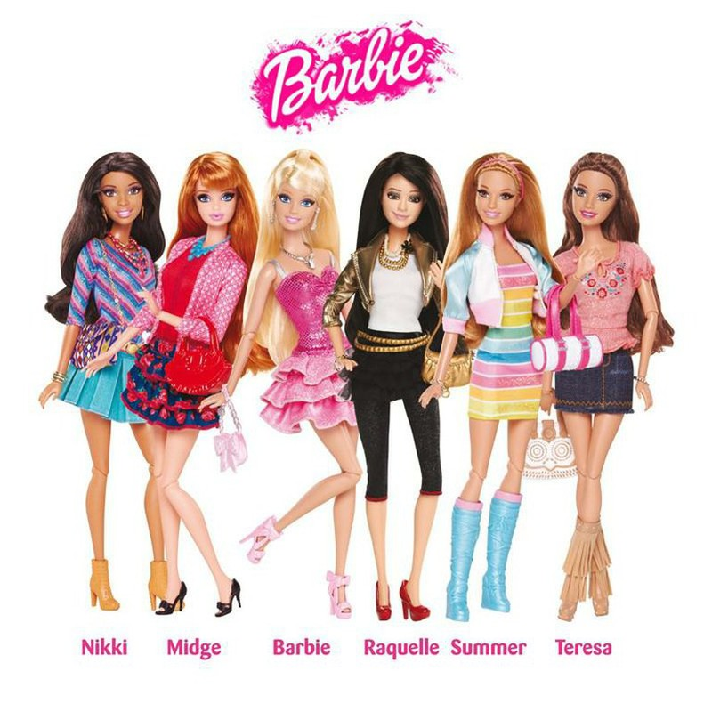
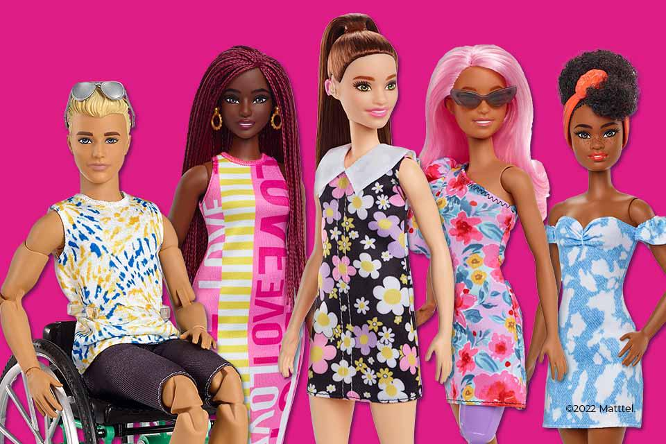
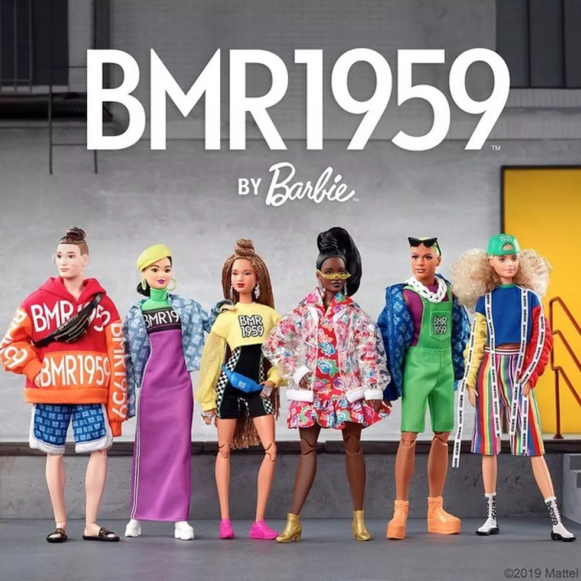

Барби и мировые тенденции
Введение
В последние годы мир стал гораздо более разнообразным и многообразным. Культурное разнообразие стало все более заметным и оказало большое влияние на моду, красоту и искусство. Бренд Барби, который всегда был символом красоты и моды, не мог остаться в стороне от этих тенденций.

Барби и мода
Барби всегда была в центре внимания модных тенденций. С самого начала, ее создатели старались отразить последние тенденции в мире моды. Барби была одета в стильные наряды, которые отражали моду той эпохи. С течением времени, Барби стала меняться вместе с модой, и стала отражать последние тенденции в мире моды.
Барби является модной иконой, и ее стиль часто отображается на подиуме. Барби была представлена на многих модных показах. На подиуме Барби была представлена в различных модных нарядах, которые были созданы известными дизайнерами. Барби носит наряды, которые способны удивить своей красотой и элегантностью.
Барби и культурное разнообразие
Барби всегда была иконой красоты и моды, но теперь ее образ стал еще более разнообразным. Бренд создал серию кукол, которые отображают культурное разнообразие мира. В этой серии вы найдете кукол в костюмах разных стран, с разными типами волос и кожи.
Барби и уличное искусство
В последние годы уличное искусство стало все более популярным и влиятельным. Барби не могла остаться в стороне от этой тенденции. Бренд создал серию кукол, которые отображают уличное искусство. Эти куклы представляют собой современные произведения искусства и отображают различные стили и направления уличного искусства.
Барби и экологические тенденции
В наше время экологические тенденции стали все более важными. Барби не могла остаться в стороне от этой тенденции. Бренд создал серию кукол, которые отображают экологические тенденции. Эти куклы созданы из экологически чистых материалов и отображают различные экологические темы.
Заключение
Барби всегда была символом красоты и моды. Но теперь она стала еще более разнообразной и отображает мировые тенденции. Барби отображает культурное разнообразие, уличное искусство и экологические тенденции. Барби всегда была модной иконой, и теперь она также является символом мировых тенденций и разнообразия.